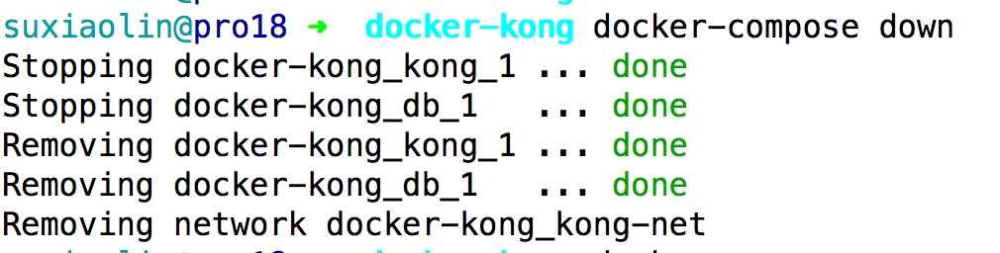
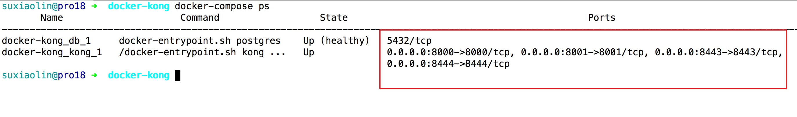

xaop源码分析
项目地址：https://github.com/liqiongfan/xaop
思路: hook掉php执行函数的方法(zend_execute_ex)，然后使用call_user_function调用自定义的回调函数
文件和作用
Xaop操作类的所有方法：kernel/xaop.c
Xaop操作类会使用的宏，比如解析和检查方法的参数：kernel/xaop.h
扩展调用php函数的函数：kernel/helper.c 和 kernel/helper.h
替换php的zend_execution_ex: kernel/exec.c 和 kernel/exec.c
解析用户编写的annotation的相关逻辑：kernel/parsing.c 和 kernel/parsing.h
全局变量定义在: php_xaop.h
全局工具类zend_class_entry的声明*annotation_ce, *doc_ce, *xaop_ce：kernel/classes.c
检查参数是否合法
#define CHECK_PARAM() do {\
if ( Z_TYPE_P(class_name) != IS_STRING && Z_TYPE_P(class_name) != IS_NULL ) { \
php_error_docref(NULL, E_ERROR, "First argument need to be a valid class name or NULL");\
return ;\
}\
if ( ZSTR_LEN(function_name) && '*' == ZSTR_VAL(function_name)[0] ) { \
php_error_docref(NULL, E_ERROR, "Function name mustn't be `*`.");\
return ;\
}\
if ( !zend_is_callable(aop, IS_CALLABLE_CHECK_NO_ACCESS, NULL) ) {\
php_error_docref(NULL, E_ERROR, "Third argument is expected to be a valid callback");\
return ;\
}\
} while(0)
小微http服务器Tinyhttpd源码分析
完整源代码参考：https://github.com/EZLippi/Tinyhttpd/blob/master/httpd.c
这个项目的调用关系图如下

库文件
#include <stdio.h> 提供perror函数
#include <sys/socket.h> 提供 accept等socket函数
#include <sys/types.h> 提供 u_short 类型
#include <netinet/in.h> 提供sockaddr_in结构体
#include <arpa/inet.h> 提供htons函数
#include <unistd.h> 提供close, dup, dup2等函数
#include <ctype.h> 提供isspace函数
#include <strings.h> 提供strcasecmp函数
#include <string.h> 提供strcat函数
#include <sys/stat.h> 提供检查文件是否存在的stat函数
#include <pthread.h> 提供pthread_create函数
#include <sys/wait.h> 提供wait函数
#include <stdlib.h> 提供printf函数
#include <stdint.h> 提供intptr_t类型

使用资源配置工具terraform在aws上构建基础架构
虽然可以直接在aws后台手动创建服务器等资源，但是这个创建过程重复过程成本比较高，所以可以把这个服务器资源使用terraform这个工具来管理，就可以把服务器资源的管理写到文件中了，服务器资源的管理可以通过修改文件实现
terraform支持aws，aliyun，ucloud等服务商，完整的服务商列表参考：https://www.terraform.io/docs/providers/
terraform是一个命令行工具，下载地址：https://www.terraform.io/downloads.html
生成api访问密钥
到这个页面https://console.amazonaws.cn/iam/home?#/users 添加新用户，访问类型设置成编程访问

将用户添加到Administrators组，这样这个用户就有访问aws资源的权限了
使用prometheus + grafana + pushgateway搭建监控可视化系统
虽然prometheus提供了pull的方式来收集数据，但是运维成本比push方式高
下面使用pushgateway快速搭建prometheus的监控可视化系统grafana
安装prometheus + grafana + pushgateway
可以使用docker一键启动，参考：https://github.com/evnsio/prom-stack
启动过程如下：
git clone https://github.com/evnsio/prom-stack.git
cd prom-stack
docker-compose pull && docker-compose up -d
三分钟上手基于openresty开发的kong网关系统
kong作为非java全家桶的一员，在非java领域的网关系统中得到了广泛的应用
使用docker一键启动kong
参考项目：https://github.com/Kong/docker-kong/tree/master/compose
启动过程如下：
git clone https://github.com/Kong/docker-kong.git
cd docker-kong/compose
docker-compose up -d
查看操作效果：


可以看到kong监控了4个端口


Copyright © 2015 Theme used GitHub CSS. 访问人/ 次